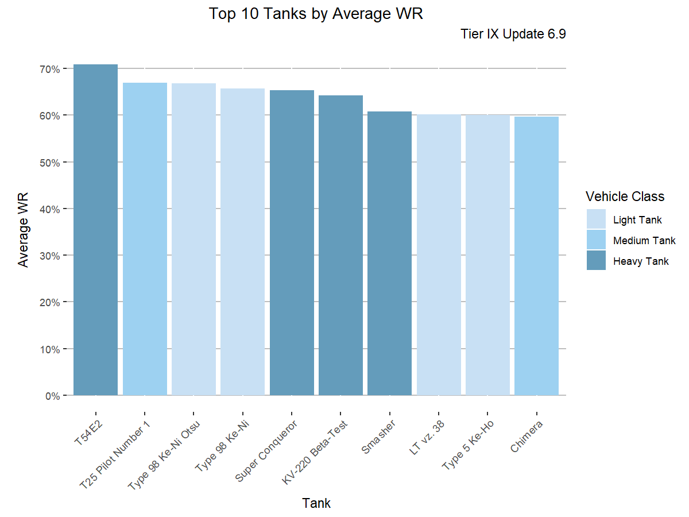
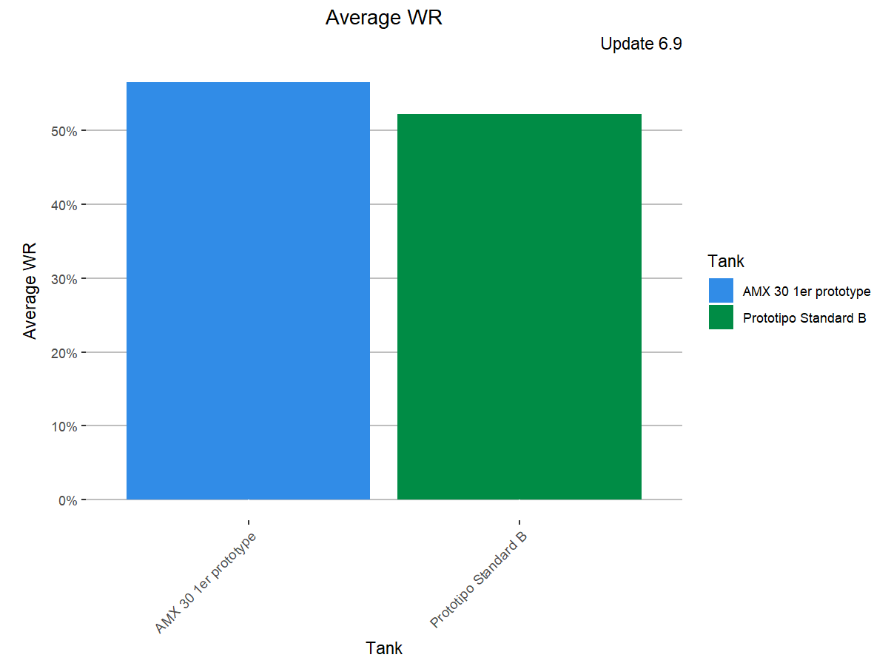
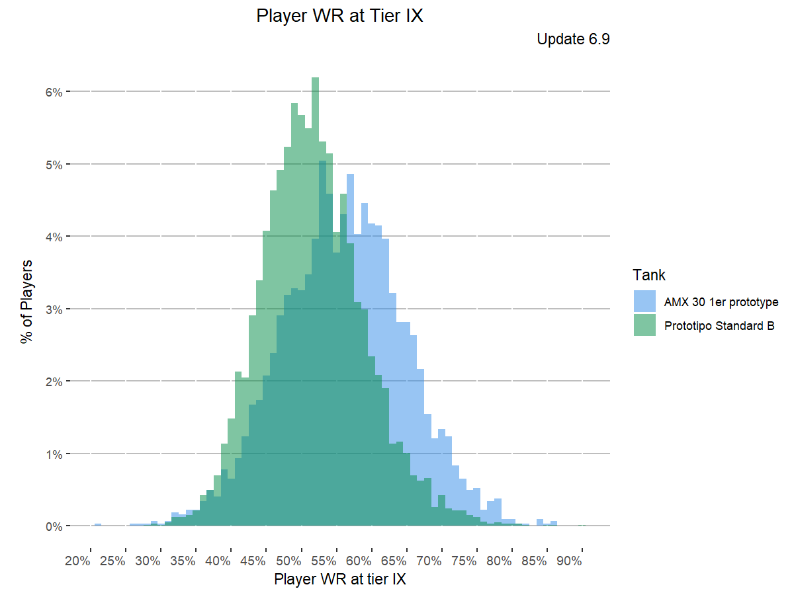
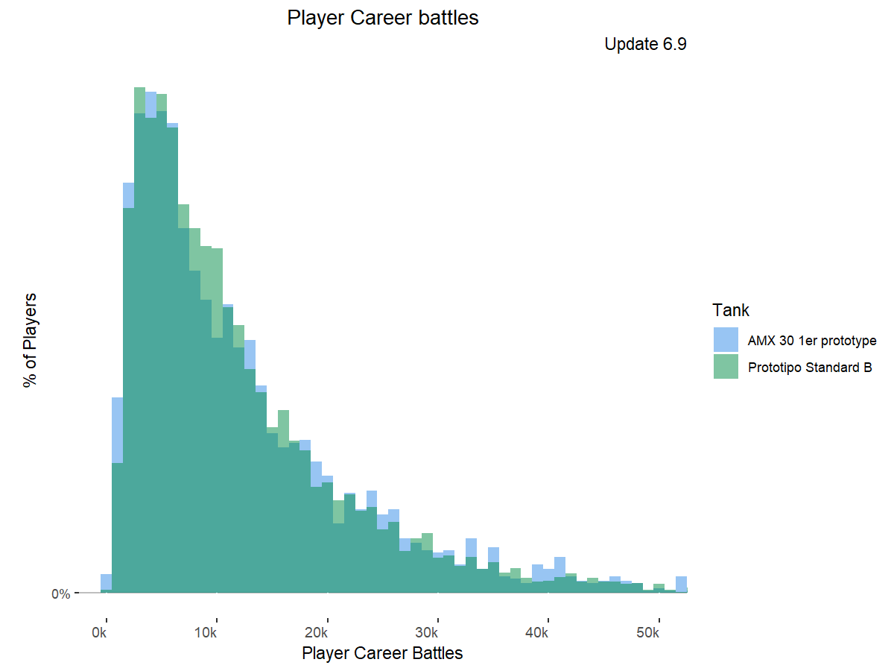
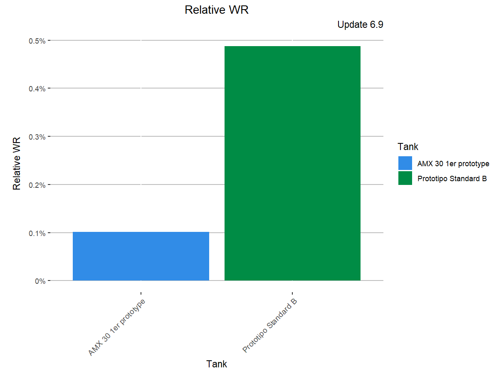
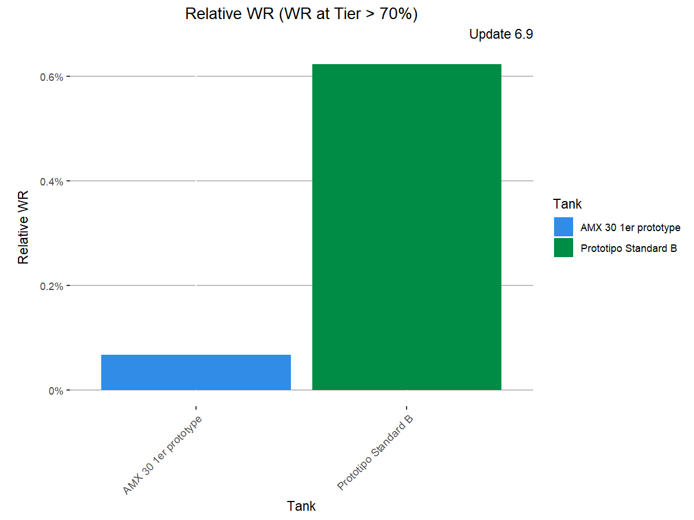
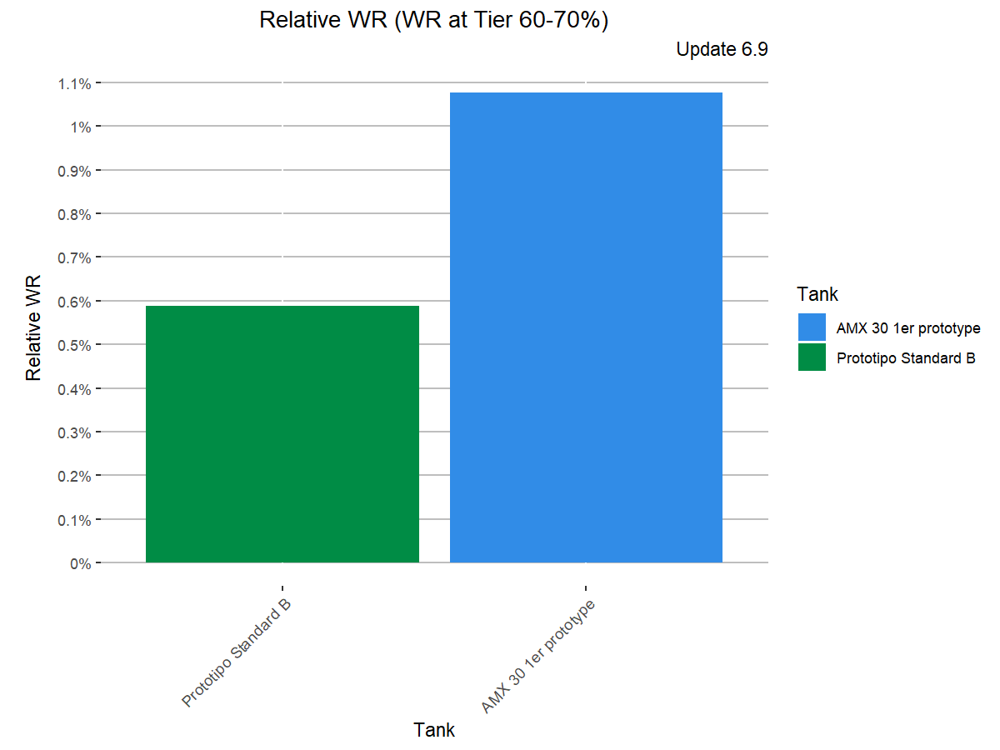
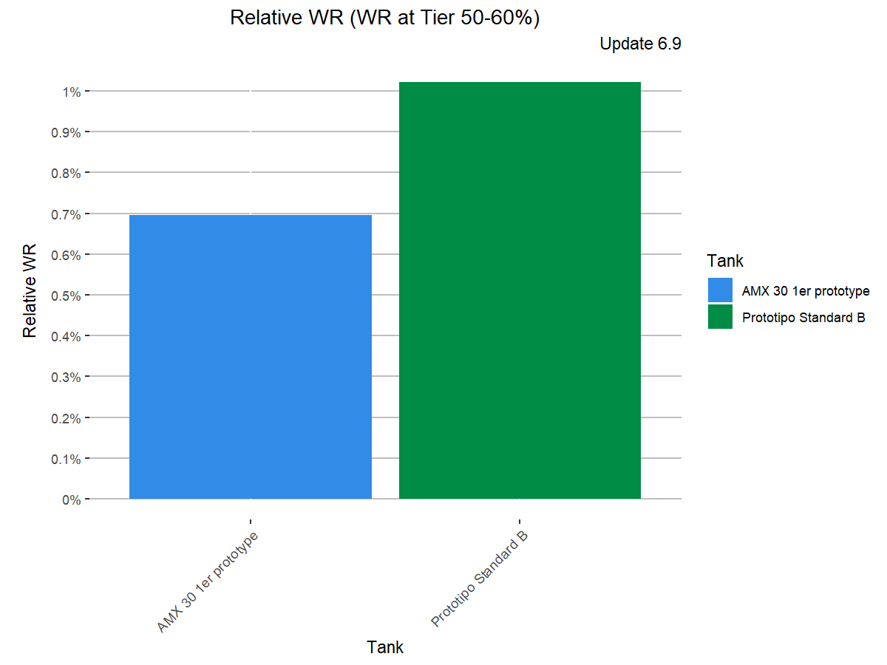
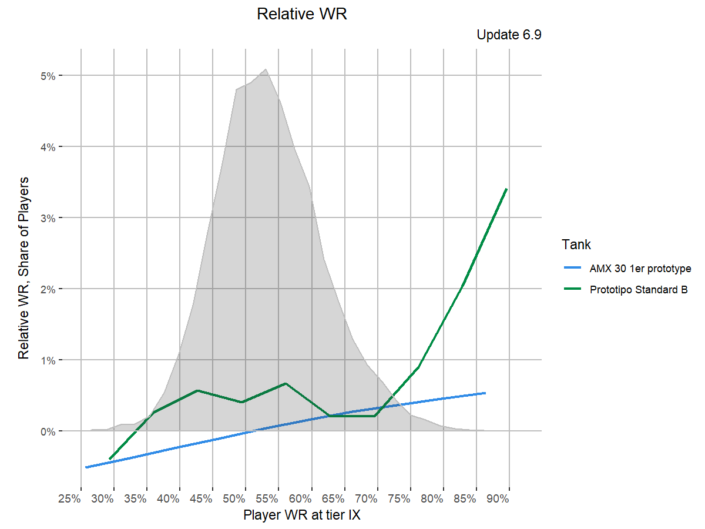

Measuring tank performance
Over-Powered (OP) tanks are maybe the 2nd most popular topic on Blitz YouTube videos and online chats - right after “the Matchmaker”. Take almost any tank in the game and the responses to the tank’s performance vary from “That tank is so OP” to “It’s rather balanced” and “Any tank in the hands of a good player is OP”. And when asked to explain why a tank is “OP” you will get a random list of characteristics that supposedly make a tank OP.

For a such common topic, tank performance and “OPness” are poorly defined terms. Often a “tank is OP since … “it is an OP tank”. I have long presented that if a tank is “OP”, it has to be visible in statistics. Otherwise there is only qualitative / subjective views left and those come in all sorts. People are susceptible to all kinds of biases in their thinking. If one has been just ammoracked by a Death Star, the chances are they think the Death Star is an OP tank even it is actually the worst tier X tank by players’ ability to win battles in it. Anecdotal experiences distort opinions since no one remembers those countless of battles where a DS was at the bottom on the list, but only the games where the DS ate half of their HP and topped the results. Therefore, in my view, tank performance is not a thing that we should vote about, but a thing we can measure in statistics.
How to measure performance in the game?
Let’s discuss first how to measure performance in the game. I am a proponent of win rate being the best measure for performance (player or tank)– not average damage, not average kills, and not speed, not alpha damage or any other attribute or characteristics. The reason for choosing win rate over other variables is the fact that winning is the objective of the game and all the damage, kills, spotting etc. are just means to win the game. Why to measure the proxy variables when you can measure the final variable itself?
There are caveats in using WR as performance measure:
- It requires lot of battles for WR to settle near one’s performance level due to both MM and RNG: It take 400 battles to reach +/- 5% accuracy, 10000 battles to reach +/- 1% accuracy and 1 million battles! to reach 0.1% accuracy with 95% confidence level. Check this link at PC WoT forums for details.
- Platoon rate impacts on WR but cannot be distilled well from the stats since WG does not publish detailed platoon rate per tank played. Platooning with a good player can lift one’s WR 5-15%.
- Career WR measures historical average, not one’s present performance level, and reacts slowly once the player has lot (10k+) battles.
- WG’s new “newbie MM queue” has distorted the Career stats for rerollers big time. This distorts both tank and player average WR. (Just ignore global & career WR).
- Some tanks are more powerful than other. Comparing different players’ WR in different tanks or global WR does not tell much.
- Different tiers have different level of difficulty. Global / Average WR is close to useless in measuring player / tank performance.
- Stock tanks’ performance is significantly lower compared to maxed-out tanks’ performance.
But other performance measures have issues too and can be gamed; Easiest way to increase average damage play more high tiers and more TDs, WN8 can be gamed by playing popular tech three tanks that are difficult for below average players and not too popular among the unicums. Despite all the issues related to WR, I consider it the best performance measure over large number of battles and in case of tanks, over large number of players since it measures directly the objective of the game (=to win battles). It is also more understandable measure vs. somewhat abstract indexes. But I believe performance indicators like WN8 which based on “input stats” (average damage, kills, spots) give more accurate view on players’ short-term performance (< 100 battles). Now going back to the tank performance.
So Average WR it is then, right?
Not so fast. Average WR of a tank is a good starter, but it itself has its own biases. Let’s have a look on two tier IX mediums: AMX 30 1tier prototype and Prototipo Standard B. Everything here is based on 6.9 data.

| Tank | Average WR | Players |
|---|---|---|
| Prototipo Standard B | 52.3 | 7622 |
| AMX 30 1er prototype | 56.5 | 3414 |
Both the tanks have been also played by thousands of players, but the AMX seems to have significantly higher average WR. Many would be tempted to claim the AMX is a better tank than Standard B. But is it?
Tank performance is different from player skill
Let us first consider a single player and the factors affecting one’s chances to win one battle:
Chance of winning ~ player skill * tank performance + RNG + team performance – enemy team performance
Over a large number of battles the variables “team performance” and “enemy team performance” approach their respective averages and the impact of RNG approaches zero (“What RNG gives, RNG takes”). The more battles on plays with a tank, only two factors will influence one’s WR in it:
WR ~ player skill * tank performance
And to be more precise, player skill is average player skill in the tank in question. Platooning has been ignored here since unfortunately WG does not publish very usable platooning stats via their API.
Saying “any tank is OP in good players hands” is the same as saying “any car is fast in the hands of a good driver”. While a good driver can make better-than-average lap times with a slow car, a good driver does not make the car any faster, but is just … a good driver. Give the driver a faster car and they can drive even faster.
TL;DR : tank performance is different from player skill
Tanks have different player bases
Let’s now go back to the AMX 30 1tier prototype vs. Standard B example and compare the player bases. I have chosen player average WR at the tier as a measure for “player skill”. And more precisely as measured during the update under study (i.e. not career WR). This eliminates couple of biases:
- WR during the update measures the player’s current performance unlike Career WR that measures the average historical performance (re-rollers vs. normal players)
- It measures player performance at the tier in question unlike average WR over all the tiers, and thus is not distorted by low-tier stats-padding
The plot below shows player WR distribution at tier IX (in any tank) for the both AMX 30 1tier prototype and Standard B players. It is clear that the AMX 30 1tier prototype is played by better players than Standard B.

| Tank | Avg player WR at Tier IX |
|---|---|
| Prototipo Standard B | 51.7 |
| AMX 30 1er prototype | 56.1 |
While both the tanks have been played by thousands of players, the AMX is a premium tank whereas Standard B is a Tech Three tank. Both the tanks’ players are roughly equally experienced (see the histogram graph below), but the AMX players are significantly better on average.

But do the differences in the tanks’ player bases explain the difference in Average WR differences or not?
Introducing Relative WR
To separate the players’ skill-level distribution from tank performance, we need to compare players’ WR in a tank to their skill-level. As explained above, I have chosen Average WR at the Tier as the measure for player skill. Blitzstars’ Tank-Compare uses players’ average WR (on any tier) as a measure for player skill in its Relative WR graphs. I have chose to use the WR at the tier in question to eliminate the impact of low-tier stats padding.
Relative WR(tank) = Average(WR in a tank - Player’s WR at the Tier)
In a nutshell, Relative WR shows how much more the players are winning with the tank vs. their tier average. The higher the Relative WR, the stronger the tank is.

| Tank | Average WR | WR at Tier | Relative WR | Players |
|---|---|---|---|---|
| Prototipo Standard B | 52.6 | 51.6 | 0.9 | 6562 |
| AMX 30 1er prototype | 56.8 | 56.1 | 0.7 | 3146 |
Relative WR graph above shows that players perform better with Standard B than the AMX when compared their tier IX average. The AMX’s average WR is far higher than the Standard B’s, but so is its player base far better – on average. Both the tanks have been played by thousands of players, so the results have not been distorted by a small sample.
Premium tanks and new higher tier tank lines are often played by better players than average. This distorts the average WR of those tanks and makes people to regard the tanks as OP whereas the fundamental reason can be that the tanks are just being played by better players. Yes, there are many borderline-OP & ridiculously-broken premium tanks, but by the Relative WR analysis allows us to separate tank performance out of skill-level differences in the tanks’ player bases.
TL;DR: Relative WR measures how much higher/lower WR players achieve in a tank vs. their average WR at the same tier.
OK, is this wall of text over now? Nope.
Performance within player skill category
The data shows how Standard B’s Relative WR is higher than the AMX 30 1tier prototype’s – on average. And caveat here the words on average. How about performance in the hands of below/above average players? Some tanks are known to be difficult for less-skilled players, but well performing in the hands of more skilled players. Let’s see how do Standard B and the AMX perform when played by different player skill category.
Performance in the hands of super-good players (WR at tier >70%)
Standard B seems to perform significantly better than the AMX in the hands of super-good players. However, the player sample is bit on the small side although not miniscule.

| Tank | Relative WR | Players |
|---|---|---|
| AMX 30 1er prototype | 0.5 | 166 |
| Prototipo Standard B | 1.3 | 85 |
Performance in the hands of very good players (WR at tier 60-70%)
When considering only players with 60-70% WR at tier IX, we can see how the tide has changed and the AMX is performing better than Standard B with a 0.5% margin. This is not a massive difference, but not a small either. There are also 729-868 players in the data set, so the sample is not that small either. I find it interesting there is difference in the tanks’ performance between the 60-70% and 70%+ WR player segments.

| Tank | Relative WR | Players |
|---|---|---|
| AMX 30 1er prototype | 1.1 | 868 |
| Prototipo Standard B | 0.6 | 729 |
Performance in the hands of good players (WR at tier 50-60%)
For this player category the results have reversed again, and Standard B performs better vs. the AMX. This is a large player category in the overall dataset.

| Tank | Relative WR | Players |
|---|---|---|
| Prototipo Standard B | 1.0 | 2968 |
| AMX 30 1er prototype | 0.7 | 1359 |
Performance in the hands of below-average players (WR at tier 40-50%)
When analyzing players with 40-50% WR at tier IX, Standard B performance clearly better. Considering that this is a large player group, it is easy to understand why Standard B’s average Relative WR is higher than the AMX’s. My guess is that it is the Standard B’s burst DPM that helps the below average players, where as AMX requires more skill in e.g. ridge fighting to perform, even it is a very good tank in the hands of a skilled player.

| Tank | Relative WR | Players |
|---|---|---|
| Prototipo Standard B | 0.9 | 2519 |
| AMX 30 1er prototype | 0.3 | 654 |
Performance in the hands of well below-average players (WR at tier <40%)
Here the difference in Relative WR turns even larger between the tanks. Standard B performs significantly better for players with below-average skills. Again, I suspect the reason being the burst damage.

| Tank | Relative WR | Players |
|---|---|---|
| Prototipo Standard B | 1.2 | 261 |
| AMX 30 1er prototype | 0.4 | 98 |
Final words
As you can see, the question of tanks’ performance is not that straightforward. Even though average WR is such a common measure for tanks’ performance, it fails to separate the impact of the different player bases from the underlying tank performance. And even when comparing tank’s (average) Relative WR it only answers to the question in average – not for very good player or well-below average player.
The graph below shows Relative WR for both the tanks as a function of players’ average WR at the tier (IX). The grey area shows the share of players with particular WR at the tier in the dataset. Small sample sizes are likely to cause errors in both the ends of the graph.

I find it surprising there was such a large difference between the tanks’ performance for 60-70% and 70% player segments. What may explain the result is the fact that player skill follows broadly normal distribution, thus there are more players with (tier) WR closer to 50% than further away from it. Therefore the 60-70% WR player segment consist of mostly 60-65% players vs. 65-70% players. And there is quite a difference skill still between 60-65% and 70%+ players.
That’s all folks – this time